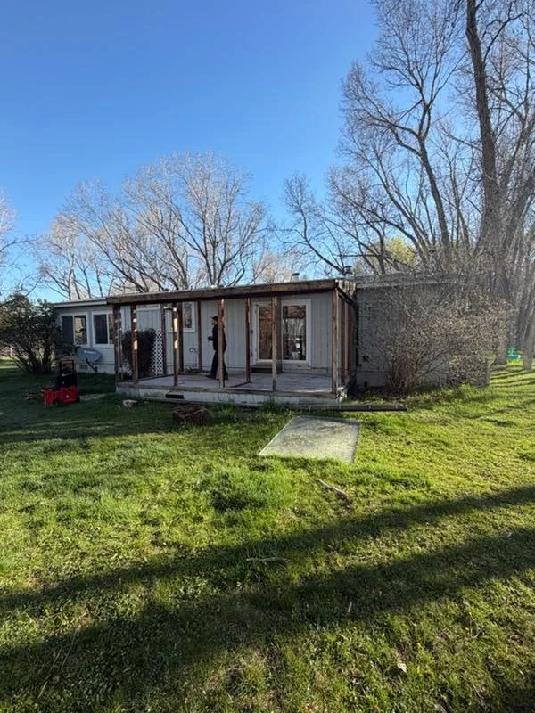
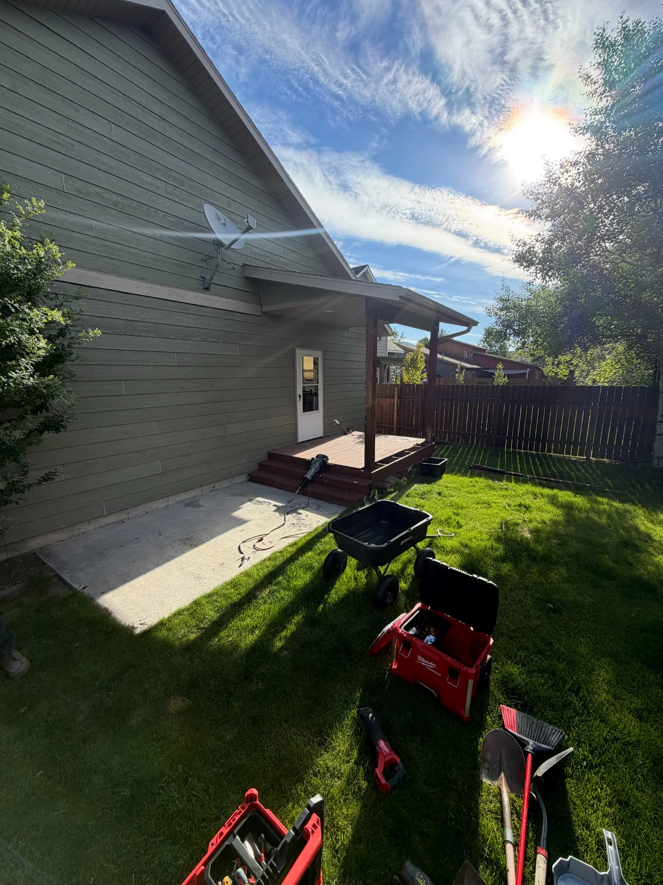
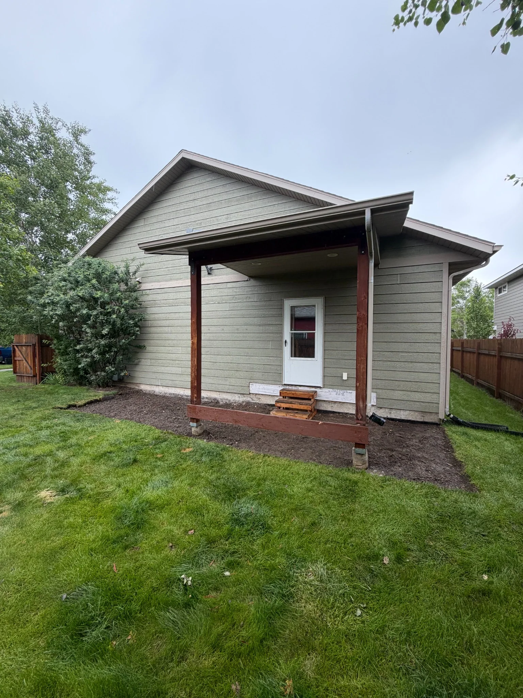

Old decks get dangerous — rotted boards, failing ledger connections, and unstable posts. Gallatin Demo & Removal tears down attached decks, covered patio structures, and freestanding outdoor platforms, hauls off every board, and leaves the area site-ready so your contractor can start fresh.
We've done deck demo jobs from Bozeman to Manhattan, Three Forks, and Belgrade — including both open-frame decks and covered pergola-style structures. If it's wood and it's coming down, we can handle it.
Get a Free Quote



We work in Bozeman, Belgrade, Manhattan, Three Forks, and surrounding areas.